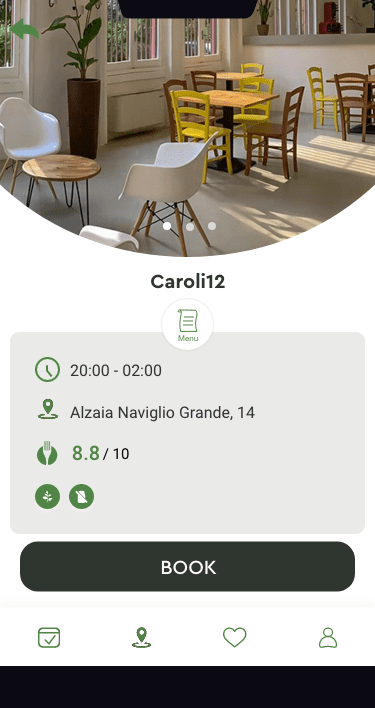
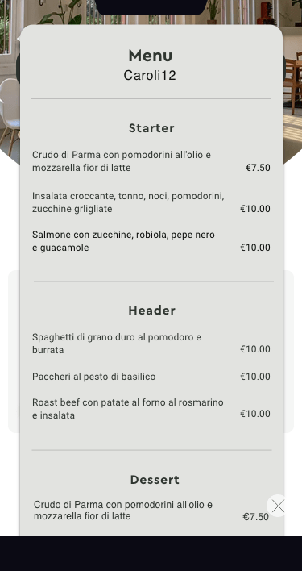
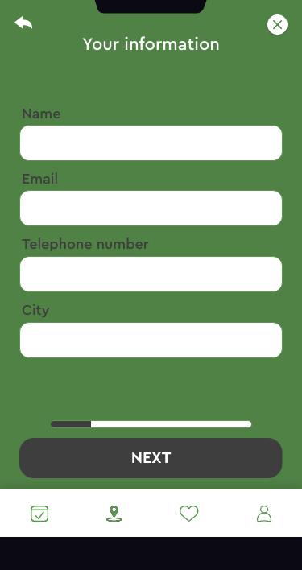
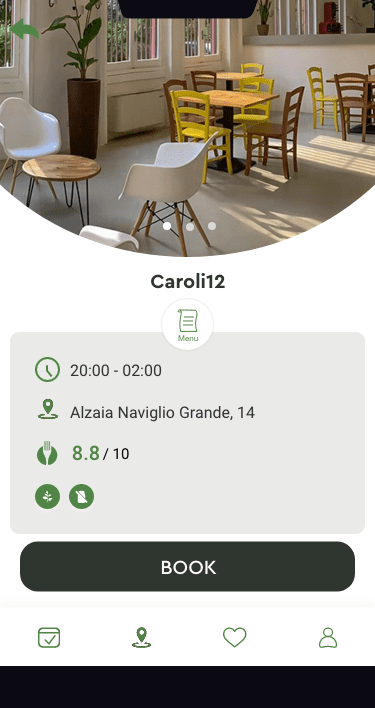
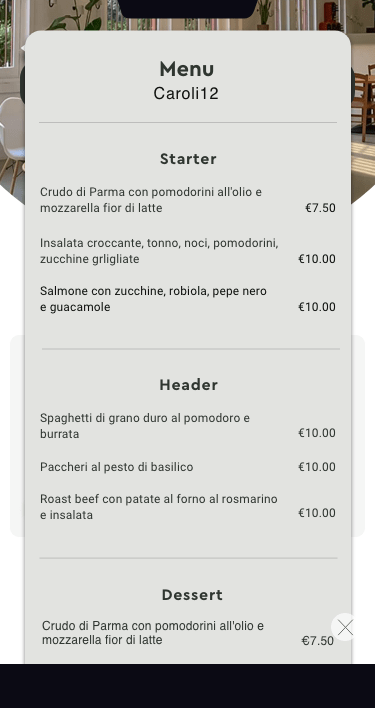
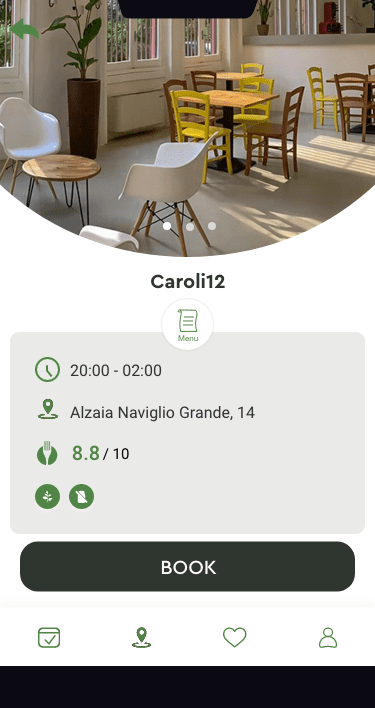
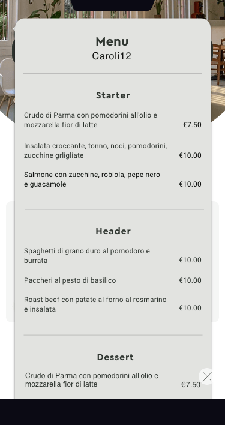
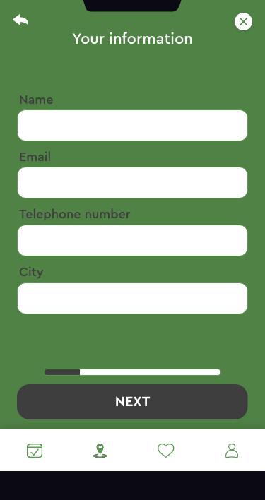
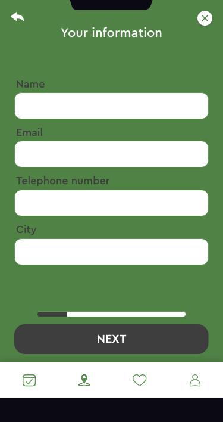

UX Design
Process Work
thefork
‣ / II
Start page
‣ / II
Booking a table
‣ / II
Creating My account
Userflows
User flow 1:
Start page for non-members
 
User flow 2:
Booking a table

User flow 3:
Creating an account
Process Work


 





 
